Textual Analysis on S&P500 Companies
This set of code demonstrates how to conduct textual analysis using S&P500 companies’ business description. It covers some basic textual analysis steps, including:
- Clean and Prepare Corpus
- Form Bag of Words
- Similarity Based on BOW
- Similarity Based on Doc2Vec
- Topic Classification using LDA
part 0: import packages
This code uses many NLP related packages, such as NLTK for stop words, Gensim and SpaCy for various preparation, vectorization tasks, and scikit-learn for vectorization and similarity calculation. Of course, there are many other ways of handling this task, and this code just serves as a toy model to demonstrate the concept.
#########################################
# Textual Analysis on S&P 500 Companies #
# Qingyi (Freda) Song Drechsler #
# Date: April 2021 #
#########################################
# Import packages
# wrds
import wrds
# common packages
import os
import re
import pandas as pd
import numpy as np
import pickle as pkl
from pprint import pprint
from collections import OrderedDict
from collections import defaultdict
import multiprocessing
import nltk
from nltk.corpus import stopwords
stop_words = stopwords.words("english")
# gensim
import gensim
import gensim.corpora as corpora
from gensim.utils import simple_preprocess
from gensim.models import CoherenceModel
from gensim.test.utils import common_corpus, common_dictionary
from gensim.models.wrappers import LdaMallet
from gensim.models.doc2vec import Doc2Vec, TaggedDocument
# spacy
import spacy
nlp = spacy.load('en_core_web_sm', disable=['parser', 'ner'])
# sklearn
from sklearn.metrics.pairwise import cosine_similarity
from sklearn.metrics import accuracy_score
from sklearn.feature_extraction.text import TfidfVectorizer
from sklearn.feature_extraction.text import CountVectorizer
from sklearn.decomposition import LatentDirichletAllocation
# Visualization
import matplotlib.pyplot as plt
%matplotlib inlinepart 1: build S&P500 index constituents
Let’s first establish connection with WRDS server and extract the constituents information of S&P500 Index.
###################
# Connect to WRDS #
###################
conn=wrds.Connection()
### Get S&P500 Index Membership from CRSP
### I opt for the monthly frequency of the data,
### but one can choose to work with crsp.dsp500list
### if more precise date range is needed.
sp500 = conn.raw_sql("""
select a.*, b.date, b.ret
from crsp.msp500list as a,
crsp.msf as b
where a.permno=b.permno
and b.date >= a.start and b.date<= a.ending
and b.date>='01/01/2000'
order by date;
""", date_cols=['start', 'ending', 'date'])Prior to 2020, Compustat used to provide index constituents data through WRDS, however, this data component was discontinued by Compustat as of October 2020, and researchers can now access S&P500 Index constituents through CRSP. However, many of the other index constituents information are no longer available due to coverage difference between CRSP and Compustat. If you as a researcher find this change inconvenient for your research projects, please reach out to S&P support support.datafeed.mi@spglobal.com directly.
Next, let’s add various other company identifiers (e.g. ticker) by linking the sp500 dataframe with crsp.msenames.
### Add Other Company Identifiers from CRSP.MSENAMES
### - You don't need this step if only PERMNO is required
### - This step aims to add TICKER, SHRCD, EXCHCD and etc.
mse = conn.raw_sql("""
select comnam, ncusip, namedt, nameendt,
permno, shrcd, exchcd, hsiccd, ticker
from crsp.msenames
""", date_cols=['namedt', 'nameendt'])
# if nameendt is missing then set to today date
mse['nameendt']=mse['nameendt'].fillna(pd.to_datetime('today'))
# Merge with SP500 data
sp500_full = pd.merge(sp500, mse, how = 'left', on = 'permno')
# Impose the date range restrictions
sp500_full = sp500_full.loc[(sp500_full.date>=sp500_full.namedt) \
& (sp500_full.date<=sp500_full.nameendt)]As the corpus of this code comes from CIQ’s company business description, we need to add company identifier used in the CIQ eco system, GVKEY.
### Add Compustat Identifiers
### - Link with Compustat's GVKEY and IID if need to work with
### fundamental data
### - Linkage is done through crsp.ccmxpf_linktable
ccm=conn.raw_sql("""
select gvkey, liid as iid, lpermno as permno,
linktype, linkprim, linkdt, linkenddt
from crsp.ccmxpf_linktable
where substr(linktype,1,1)='L'
and (linkprim ='C' or linkprim='P')
""", date_cols=['linkdt', 'linkenddt'])
# if linkenddt is missing then set to today date
ccm['linkenddt']=ccm['linkenddt'].fillna(pd.to_datetime('today'))
# Merge the CCM data with S&P500 data
# First just link by matching PERMNO
sp500ccm = pd.merge(sp500_full, ccm, how='left', on=['permno'])
# Then set link date bounds
sp500ccm = sp500ccm.loc[(sp500ccm['date']>=sp500ccm['linkdt'])\
&(sp500ccm['date']<=sp500ccm['linkenddt'])]
# Rearrange columns for final output
sp500ccm = sp500ccm.drop(columns=['namedt', 'nameendt', 'linktype', \
'linkprim', 'linkdt', 'linkenddt'])
sp500ccm = sp500ccm[['date', 'permno', 'comnam', 'ncusip',\
'shrcd', 'exchcd', 'hsiccd', 'ticker', \
'gvkey', 'iid', 'start', 'ending', 'ret']]Optional step of linking with CIK in case you want to connect with SEC filings for your analysis:
### Add CIKs and Link with SEC Index Files using CIK
names = conn.raw_sql(""" select gvkey, cik, sic, naics, gind, gsubind from comp.names """)
# Merge sp500 constituents table with names table
sp500cik = pd.merge(sp500ccm, names, on='gvkey', how='left')
sp500cik.head()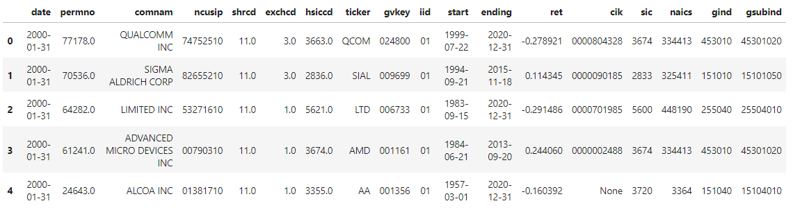
part 2: read in business description
S&P offers various databases under its umbrella, including most commonly used Compustat (COMP) and Capital IQ (CIQ). This block of code reads in the long format of business description from CIQ and short version from COMP. We will be using the long version as corpus for this project.
### Extract business description
# short description - "busdesc" from comp.company
compbus = conn.raw_sql(""" select gvkey, conm, cik, busdesc from comp.company """)
# long description - "businessdescription" from CIQ
# link with GVKEY using CompanyID
ciqbus = conn.raw_sql(""" select a.*, b.gvkey, b.startdate, b.enddate
from ciq.ciqbusinessdescription as a,
ciq.wrds_gvkey as b
where a.companyid = b.companyid """, date_cols = ['startdate', 'enddate'])Occasionally, a GVKEY can be mapped with multiple CompanyIDs (identifiers used in CIQ system). Here is one example:
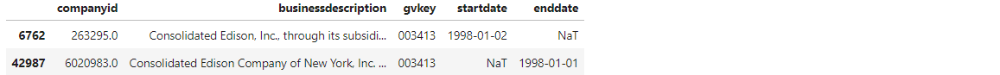
To avoid double counting, for a given GVKEY, if more than one companyid is mapped, I pick the larger companyid as it is probably a more recent link. This will yield a one-to-one mapping between GVKEY and CompanyID.
# Choose record with max CompanyID
maxid = ciqbus.groupby('gvkey')['companyid'].max().reset_index()
ciqbus_nodup = pd.merge(ciqbus, maxid, how = 'inner', on = ['gvkey', 'companyid'])
ciqbus_nodup.loc[ciqbus_nodup.gvkey == '003413']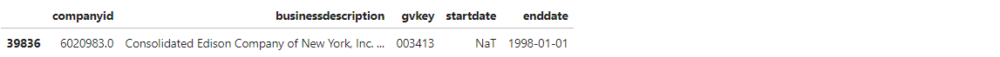
Let’s inspect the short and long version of business description of the same company, using AAI Corporation as an example.
### Merge business description from COMP and CIQ
# join by GVKEY
busdesc = pd.merge(compbus, ciqbus_nodup, how = 'inner', on = 'gvkey')
# Print one short and long version of the business description for inspection
print('\nShort business description from COMP:\n', busdesc.iloc[1].busdesc )
print('\nLong business description from CIQ:\n', busdesc.iloc[1].businessdescription )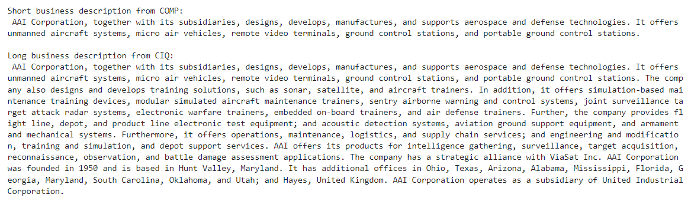
part 3: clean and prepare corpus
This is a standard cleaning process that can be applied to other text bodies, user can modify the procedure to suite specific textual cleaning need. It does the following common cleaning tasks:
- convert text to lower case
- keep only alphabetic characters (remove numbers and special characters)
- remove stop words
- form bigrams
- lemmatize words
Let’s use companies in the S&P500 Index as of 2020 as our universe:
# Use SP500 Companies in 2020 as universe
univ = sp500cik.loc[sp500cik.date=='12/31/2020'][['date', 'permno', 'comnam', 'ncusip', 'gvkey', 'iid', 'cik', 'ticker', 'sic', 'naics']]
# Merge to get business description
sp500busdesc = pd.merge(univ, busdesc[['gvkey', 'companyid', 'busdesc', 'businessdescription']], how = 'inner', on = ['gvkey'])
sp500busdesc.head()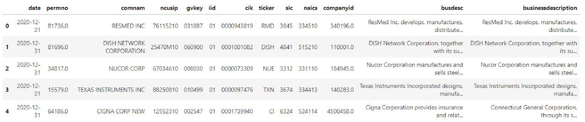
Start Cleaning. First convert the busdesc (short) and businessdescription (long) column into lists.
# Convert both short and long busindess description (busdesc, businessdescription) to list
busdesc_lst = sp500busdesc.busdesc.tolist()
busdesclong_lst = sp500busdesc.businessdescription.tolist()
# For this exercise, I use long business description as corpus
text_feed = busdesclong_lst
len(busdesc_lst), len(busdesclong_lst)Below are several functions for textual cleaning tasks:
- text_clean() - convert all texts to lower case and remove non-letter components
# convert all text to lower case and remove non alphabetic components
def text_clean(raw_text):
# 1. convert to lower case
txt1 = raw_text.lower().strip()
# 2. remove non-letters
txt2 = re.sub("[^a-zA-Z]", " ", txt1).split(' ')
return (txt2)- sent_to_words() - convert sentences to list
# convert sentences to list
def sent_to_words(sentences):
for sent in sentences:
yield(text_clean(sent))- remove_stopwords()- take out the stop words defined by NLTK
# Remove Stop Words
def remove_stopwords(texts):
nostop = [[word for word in doc if word not in stop_words] for doc in texts]
return nostop- make_bigrams()- forms bigram if needed
# form bigrams
def make_bigrams(texts):
#bigram = gensim.models.Phrases(texts, min_count=1, threshold=10)
bigram = gensim.models.Phrases(texts)
bigram_mod = gensim.models.phrases.Phraser(bigram)
return [bigram_mod[doc] for doc in texts]- lemmatization_str()- lemmatize the words and convert the output to list of strings
# lemmatization with output of list of strings to fit into countvectorizer
def lemmatization_str(texts):
texts_out = []
for sent in texts:
doc = nlp(" ".join(sent))
texts_out.append(' '.join([token.lemma_ for token in doc]))
return texts_outNow let’s apply these functions to the input list:
### Apply the raw text into the cleaning process
# Input text: text_feed
# Output text: text_prep
print('Start cleaning ... ')
print('Remove non-alphabetic characters and convert to lower case ... ')
text_nonum = list(sent_to_words(text_feed))
print('Remove stop words ... ')
text_nostops = remove_stopwords(text_nonum)
print('Form bigrams ... ')
text_bigrams = make_bigrams(text_nostops)
print('Lemmatize words ... ')
text_lemmatized = lemmatization_str(text_bigrams)
print('Cleaning done. text_prep is the cleaned output.')
text_prep = text_lemmatized
len(text_prep)The cleaning process above should convert the input text to all lower case, remove non letters components, form bigrams and lemmatize the words. Below is a comparison of input texts versus the cleaned text, using Ralph Lauren’s business description as an example:
Raw input text:
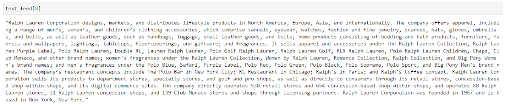
Cleaned output text:
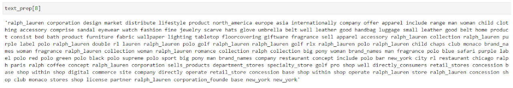
part 4: form bag of words
This block of code uses the vectorization tools offered in scikit-learn, and forms bag-of-words (BOW) for each corpus.
# Vectorize the vocab
vect = CountVectorizer()
# Form vector for corpus
vect_array = vect.fit_transform(text_prep).toarray()
### Create BOW Dictionary
intext = text_prep
# Create an empty dictionary to store the similarity score
bow_dict = {}
for row_id, text in enumerate(intext):
# loop through all records
frequency = defaultdict(int)
for token in text.split(' '):
#store tokens and count in frequency dict
frequency[token] += 1
# store frequency dict to bow_dict
bow_dict[row_id] = frequency
# Store BOW into df
bow_df = pd.DataFrame()
for item, lst in list(bow_dict.items()):
_df = pd.DataFrame(lst.keys(), lst.values())
_df['comp_id'] = item
bow_df = bow_df.append(_df)
bow_df = bow_df.reset_index().rename(columns={'index': 'freq', 0: 'word'})
# slice out SP500 company ids for linking
sp500id = sp500busdesc[['permno', 'gvkey', 'iid', 'ticker']].reset_index().rename(columns={'index': 'comp_id'})
# Add PERMNO GVKEY IID info
bow_df = pd.merge(bow_df, sp500id, how = 'left', on = ['comp_id'])The BOW dataframe contains the following information:
- word: focal word
- freq: number of times a word appears in that document
- company identifiers
Below is a subset of BOW for the company Apple. For instance, the word “apple” appears 11 times, and the word “market” appears once in Apple’s business description obtained from CIQ.
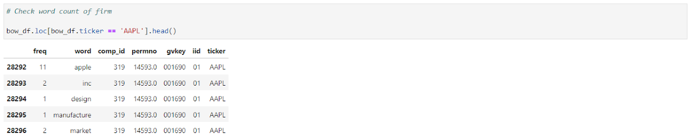
And out of curiosity, I summarize below the top 10 most frequently appeared words in all S&P500 companies’ business description. Researchers might want to customize the generic stop words defined by NLTK to include certain content specific stop words, such as “company” or “inc” in this case.
### Examine word distribution across all company business descriptions (documents)
totalcnt = bow_df.groupby('word')['freq'].sum().reset_index().sort_values(by=['freq'], ascending = False)
# Report top 10 most frequent words
totalcnt.head(10)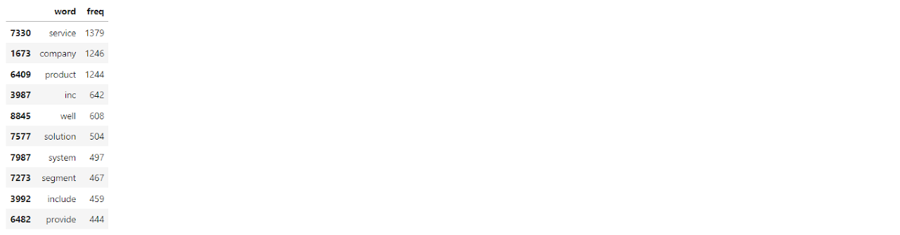
part 5: similarity based on Bow
This section relies on the vectors created based on BOW and calculates the pairwise similarity score among companies in this universe. Before diving into the full sample, let’s inspect this approach using individual companies: Disney, Microsoft, Wells Fargo and Citi.
### Illustrating using several companies:
# Find position of the document in the list for each company
dis_pos = sp500busdesc.loc[sp500busdesc.ticker =='DIS'].index.values[0]
msft_pos = sp500busdesc.loc[sp500busdesc.ticker =='MSFT'].index.values[0]
wfc_pos = sp500busdesc.loc[sp500busdesc.ticker =='WFC'].index.values[0]
c_pos = sp500busdesc.loc[sp500busdesc.ticker =='C'].index.values[0]
### Report pairwise similarity score among the select firms
# use cosine_similarity function
print('Pairwise similarity score:')
print('Microsoft vs Disney:', "{:.2f}".format(float(cosine_similarity([vect_array[dis_pos]], [vect_array[msft_pos]]))))
print('Disney vs Wells Fargo:', "{:.2f}".format(float(cosine_similarity([vect_array[dis_pos]], [vect_array[wfc_pos]]))))
print('Wells Fargo vs Citi:', "{:.2f}".format(float(cosine_similarity([vect_array[c_pos]], [vect_array[wfc_pos]]))))And the pairwise similarity score among these companies are reported below. As anticipated, the two financial institutions, Wells Fargo and Citi, display relatively high similarity score based on BOW formed from their respective business description.
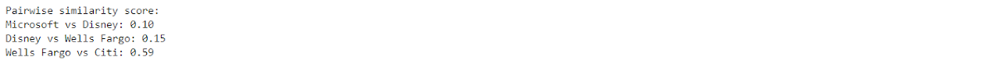
Now let’s apply the similarity score calculation on the entire sample:
### Similarity score across all companies
# list containing all tickers
ticker_lst = sp500busdesc.ticker.tolist()
# empty list to store the bow similarity scores
bow_score = []
# input vector
invect = vect_array
# function to loop through company pair (i,j)
def bow_simscore(inlist):
for i in range(len(invect)):
for j in range(len(invect)):
_tmp = {'comp1': ticker_lst[i], # ticker for company i
'comp2': ticker_lst[j], # ticker for company j
'bow_score': float(cosine_similarity([invect[i]], [invect[j]]))} # similarity score for pair (i,j)
bow_score.append(_tmp)
return bow_score
### Apply over all companies
print ('Calculating pairwise similarity score among all firms ... ')
bow_score = bow_simscore(invect)
print ('Done.')Tidy up the output and sort the results in descending order to find the most similar company for each focal company.
### Tidying up the output
# Convert to dataframe
bow_score_df = pd.DataFrame(bow_score)
# take out comparison against itself (i,i), which is always 1 by nature
# then drop the (i,j) vs (j, i) duplicates
bow_score_df = bow_score_df.loc[bow_score_df.comp1 != bow_score_df.comp2].drop_duplicates()
# Sort by comp1 then descending based on bow_score to find most similar companies
bow_score_df = bow_score_df.sort_values(by=['comp1', 'bow_score'], ascending = [True, False])
bow_score_df.head()Then for each of the S&P 500 companies, find its most similar peer based on BOW similarity score:
# For each company, keep the company with the highest cosine score
similar_comp_bow = bow_score_df.loc[bow_score_df.groupby('comp1')['bow_score'].idxmax()]
# merge back company identifier info
similar_comp_bow = pd.merge(similar_comp_bow, sp500busdesc[['comnam', 'ticker', 'sic', 'naics']], how = 'left', left_on = 'comp1', right_on = 'ticker')
similar_comp_bow = pd.merge(similar_comp_bow, sp500busdesc[['comnam', 'ticker', 'sic', 'naics']], how = 'left', left_on = 'comp2', right_on = 'ticker')
similar_comp_bow = similar_comp_bow.rename(columns={'comp2': 'comp_bow', 'comnam_x':'comnam1', 'comnam_y':'comnam_bow', 'sic_x': 'sic1', 'sic_y':'sic_bow', 'naics_x':'naics1', 'naics_y':'naics_bow'}).drop(columns=['ticker_x', 'ticker_y'])
similar_comp_bow = similar_comp_bow[['comp1', 'comnam1', 'sic1', 'naics1', 'comp_bow', 'comnam_bow', 'sic_bow', 'naics_bow', 'bow_score']].drop_duplicates()I report below the most similar company for some of the familiar tickers. Based on BOW pairwise similarity score, some company has clear peers (e.g. GM vs F and or C vs JPM), others report most similar peer somehow different from their dominant industry (e.g. FB vs RMD or AMZN vs ATVI). The latter case often happens among companies that expand in multiple fields of operation.
# Lookup most similar company by ticker
company_ticker = ['NCLH', 'MSFT', 'WFC', 'XOM',
'AMZN', 'C', 'DIS', 'V', 'JNJ',
'WMT', 'UAL', 'FB', 'CBOE',
'GM', 'ABT', 'MMM', 'BMY']
sample_bow = similar_comp_bow.loc[similar_comp_bow.comp1.isin(company_ticker)]
sample_bow.style.format({'bow_score': '{:.2f}'})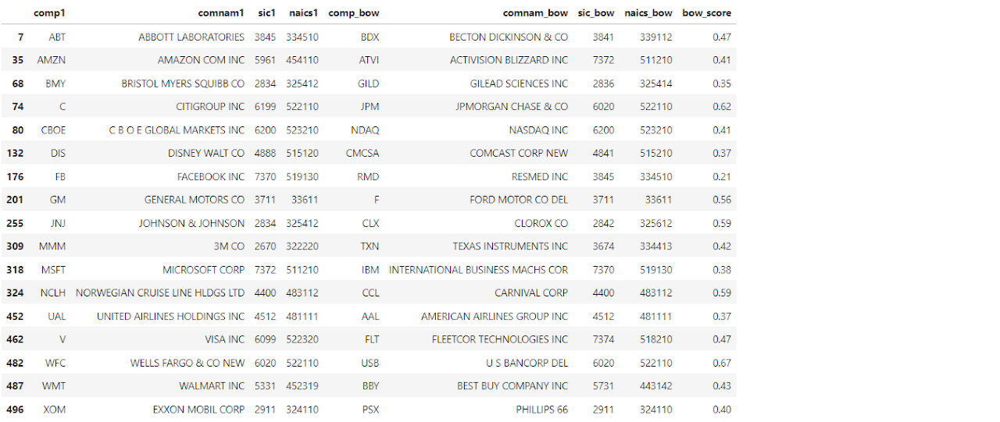
part 6: similarity based on doc2vec
This is an alternative approach to calculate similarity score, and it relies on Doc2Vec as part of the Gensim package. Please note that the sample size of this toy project is probably too small but I nevertheless include it here for demonstration purpose.
# Uses text_nonum as input as doc2vec approach doesn't require cleaning of stop words or lemmatization
# Tagging documents
tagged_text = [TaggedDocument(words=_d, tags=[str(i)]) for i, _d in enumerate(text_nonum)]
# Now train the data
#cores = multiprocessing.cpu_count()
assert gensim.models.doc2vec.FAST_VERSION > -1 # accelerate the process
# Build model
model = Doc2Vec(dm=1, vector_size=40, min_count = 1)
model.build_vocab(tagged_text)
for epoch in range(10):
model.train(tagged_text, epochs=model.epochs, total_examples=model.corpus_count)
print("Epoch #{} is trained.".format(epoch+1))Again let’s first inspect the pairwise similarity score among the four individual companies we examined before.
### Report pairwise similarity score among the select firms
# use cosine_similarity function
print('Pairwise similarity score:')
print('Microsoft vs Disney:', "{:.2f}".format(model.wv.n_similarity(text_nostops[msft_pos], text_nostops[dis_pos])))
print('Disney vs Wells Fargo:', "{:.2f}".format(model.wv.n_similarity(text_nostops[dis_pos], text_nostops[wfc_pos])))
print('Wells Fargo vs Citi:', "{:.2f}".format(model.wv.n_similarity(text_nostops[wfc_pos], text_nostops[c_pos])))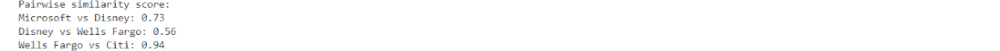
Let’s now expand the analysis to the entire sample of all 500 companies:
# Calculate d2v based similarity score for the entire sample
d2v_score = []
def d2v_simscore(inlist):
for i in range(len(inlist)):
for j in range(len(inlist)):
_tmp = {'comp1': ticker_lst[i],
'comp2': ticker_lst[j],
'd2v_score': model.wv.n_similarity(inlist[i], inlist[j]) }
d2v_score.append(_tmp)
return d2v_score
# apply over all companies
d2v_score = d2v_simscore(text_nostops)
# Convert to dataframe
d2v_score_df = pd.DataFrame(d2v_score)
# take out comparison against itself (i,i)
# then drop the (i,j) vs (j, i) duplicates
d2v_score_df = d2v_score_df.loc[d2v_score_df.comp1 != d2v_score_df.comp2].drop_duplicates()
# Sort by comp1 then descending based on bow_score
d2v_score_df = d2v_score_df.sort_values(by=['comp1', 'd2v_score'], ascending = [True, False])And then pick out the most similar company:
# For each company, keep the most similar company
similar_comp_d2v = d2v_score_df.loc[d2v_score_df.groupby('comp1')['d2v_score'].idxmax()]
similar_comp_d2v = pd.merge(similar_comp_d2v, sp500busdesc[['comnam', 'ticker', 'sic', 'naics']], how = 'left', left_on = 'comp1', right_on = 'ticker')
similar_comp_d2v = pd.merge(similar_comp_d2v, sp500busdesc[['comnam', 'ticker', 'sic', 'naics']], how = 'left', left_on = 'comp2', right_on = 'ticker')
similar_comp_d2v = similar_comp_d2v.rename(columns={'comp2':'comp_d2v', 'comnam_x':'comnam1', 'comnam_y':'comnam_d2v', 'sic_x': 'sic1', 'sic_y':'sic_d2v', 'naics_x':'naics1', 'naics_y':'naics_d2v'}).drop(columns=['ticker_x', 'ticker_y'])
similar_comp_d2v = similar_comp_d2v[['comp1', 'comnam1', 'sic1', 'naics1', 'comp_d2v', 'comnam_d2v', 'sic_d2v', 'naics_d2v', 'd2v_score']].drop_duplicates()Again, let’s inspect the same group of companies before:
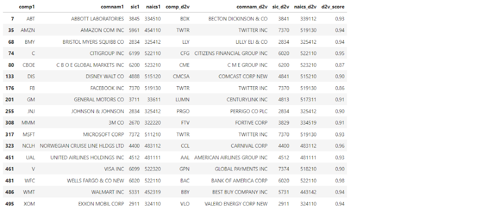
And finally, let’s put the BOW and Doc2Vec results side by side for comparison. For some instances, both approaches yield the same result for the focal company (e.g. ABT vs BDX, NCLH vs CCL, UAL vs AAL, WMT vs BBY), others return different candidates but generally belong to the same industry.
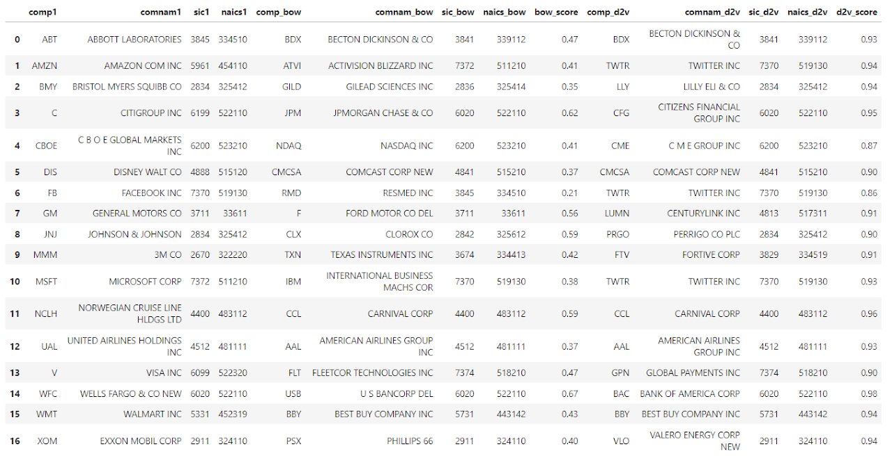
part 7: topic classification using lda
to be continued…